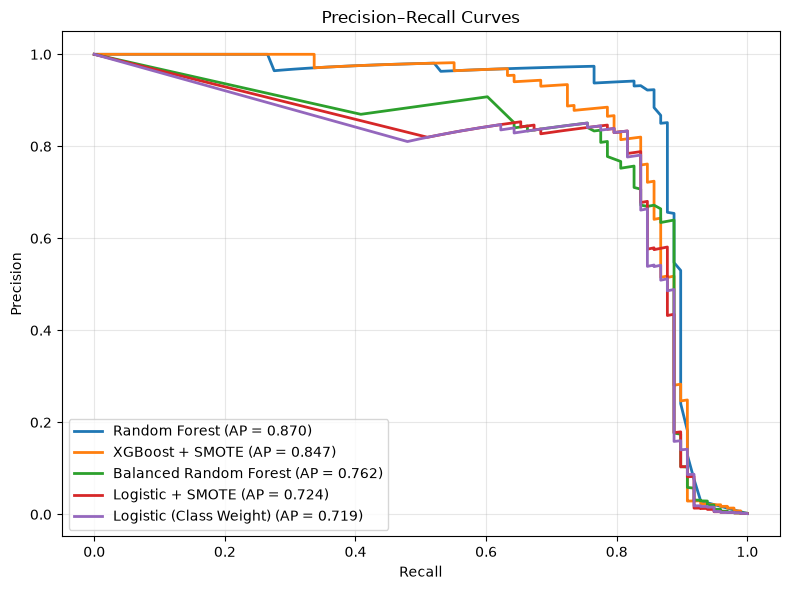

Credit Card
Fraud Detection
Executive Summary
This project establishes an end-to-end supervised learning framework for detecting fraudulent credit card transactions under extreme class imbalance. Rather than optimizing blindly for predictive accuracy, this study investigates how different imbalance mitigation strategies—including class weighting, synthetic oversampling, and balanced ensemble methods—impact the precision-recall trade-offs inherent to fraud detection.
Using the European Credit Card Fraud Detection dataset containing 284,807 transactions and only 492 fraudulent events (0.17%), this analysis evaluates five machine learning architectures to determine which modeling strategy best balances fraud identification with false-positive control.
Data Engineering & Imbalance-Aware Preprocessing
Fraud detection presents a unique modeling challenge because fraudulent transactions are significantly underrepresented. A naive classifier can achieve extremely high accuracy while failing to identify meaningful fraud patterns. The preprocessing pipeline was designed to preserve realistic transaction distributions while preventing information leakage throughout model development.
-
Feature Isolation: Separated anonymized PCA-transformed transaction variables (
V1-V28), transaction amount, and time features from the binary fraud target (Class). - Leakage Prevention: Implemented preprocessing and modeling workflows using Scikit-Learn compatible pipelines to ensure transformations occurred exclusively within training data.
- Imbalance Analysis: Identified severe class skew, with fraudulent transactions representing only 0.17% of observations, motivating the evaluation of multiple imbalance strategies.
Multi-Architecture Modeling Strategy
To evaluate how algorithm choice and imbalance handling influence fraud detection, five classification approaches were developed and compared using consistent train-test splits and cross-validated hyperparameter optimization.
[ Credit Card Transaction Dataset ]
│
[ Train/Test Stratified Split ]
│
┌─────────────────────┼─────────────────────┐
▼ ▼ ▼
Logistic Regression Balanced Random Forest XGBoost
(Class Weight / SMOTE) (Balanced Sampling) (SMOTE)
│
[ Performance Evaluation ]
Precision | Recall | F1 | ROC-AUC | PR-AUC
Class Imbalance Strategy Comparison
| Model Architecture | Imbalance Strategy | PR-AUC | Precision | Recall | F1 |
|---|---|---|---|---|---|
| Logistic Regression | Class Weights | 0.72 | 0.06 | 0.92 | 0.11 |
| Logistic Regression | SMOTE Oversampling | 0.72 | 0.06 | 0.92 | 0.11 |
| Balanced Random Forest | Balanced Bootstrap Sampling | 0.76 | 0.13 | 0.90 | 0.22 |
| Random Forest | No Explicit Balancing | 0.87 | 0.94 | 0.83 | 0.88 |
| XGBoost | SMOTE Oversampling | 0.85 | 0.36 | 0.89 | 0.51 |
Model Diagnostics & Performance Analysis
1. Precision-Recall Trade-Off Analysis
Because fraud detection operates under extreme class imbalance, Precision-Recall analysis was prioritized over traditional accuracy metrics. The comparison revealed substantial differences in model behavior:
- Random Forest: Achieved the strongest balance between fraud detection and false-positive reduction, producing the highest PR-AUC and precision.
- XGBoost + SMOTE: Demonstrated excellent fraud coverage through high recall but generated more false positives due to aggressive synthetic minority learning.
- Logistic Regression: Maintained high recall but lacked sufficient precision, limiting practical fraud detection utility.

2. Ensemble Learning Performance
The strongest-performing model was the standard Random Forest classifier, outperforming more aggressive imbalance-handling approaches. This suggests that ensemble diversity and bootstrap aggregation were sufficient to identify fraudulent transaction patterns without artificially modifying the minority class distribution.
- Highest PR-AUC: Random Forest achieved 0.87, indicating the strongest ranking ability for fraudulent transactions.
- False Positive Control: Random Forest achieved 0.94 precision, substantially outperforming models trained with synthetic oversampling.
- Balanced Detection: The model maintained strong recall (0.83) while avoiding excessive fraud alerts.
Final Takeaway
Modeling Insight: In highly imbalanced fraud detection environments, increasing minority representation does not automatically improve predictive performance. While SMOTE and balanced sampling strategies improved fraud sensitivity, they introduced substantial false-positive costs. The standard Random Forest architecture achieved the strongest operational balance by learning minority transaction patterns directly from the original distribution.